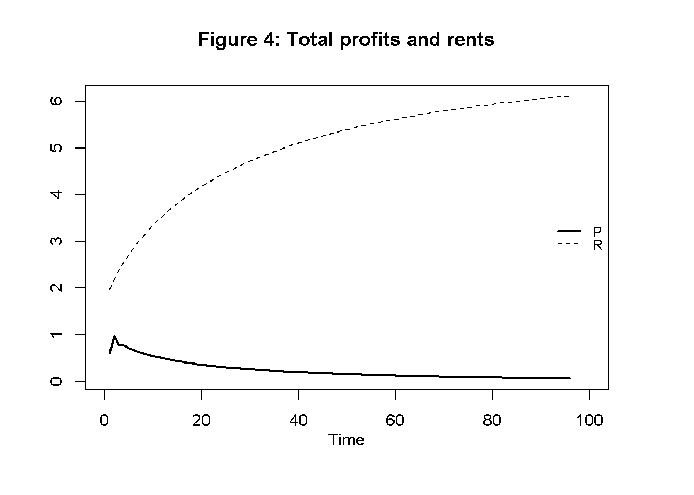
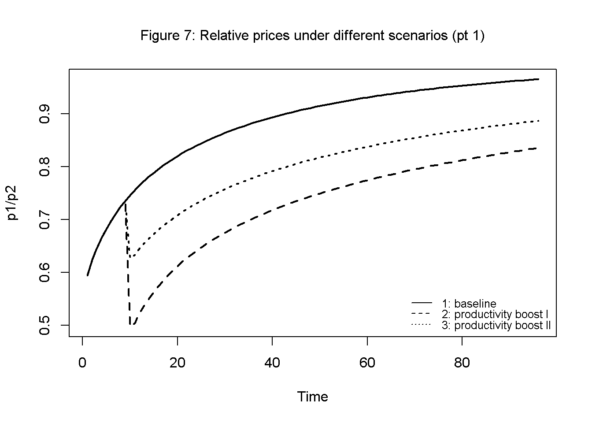
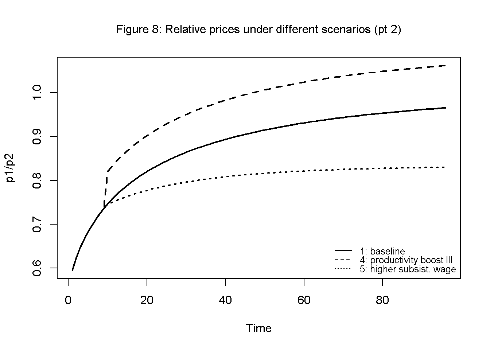
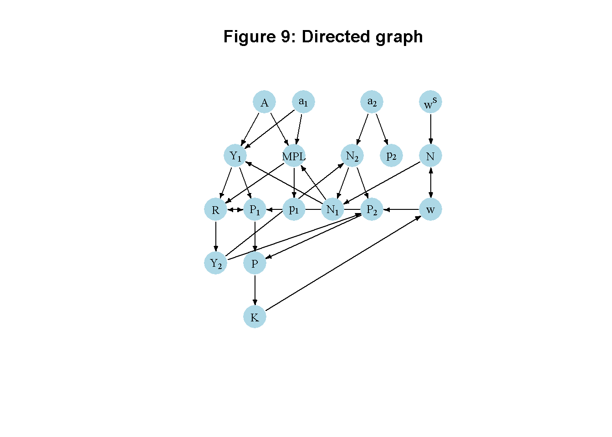

# Clear the environment
rm(list=ls(all=TRUE))
# Set number of periods
Q=600
# Set number of scenarios (including baseline)
S=5
# Set period in which shock/shift will occur
s=15
# Create (S x Q)-matrices that will contain the simulated data
Y1=matrix(data=1,nrow=S,ncol=Q) # Output in sector 1
Y2=matrix(data=1,nrow=S,ncol=Q) # Output in sector 2
R=matrix(data=1,nrow=S,ncol=Q) # Rent
P=matrix(data=1,nrow=S,ncol=Q) # Qotal profits
P1=matrix(data=1,nrow=S,ncol=Q) # Profits in sector 1
P2=matrix(data=1,nrow=S,ncol=Q) # Profits in sector 2
N=matrix(data=1,nrow=S,ncol=Q) # total employment
N1=matrix(data=1,nrow=S,ncol=Q) # employment in sector 1
N2=matrix(data=1,nrow=S,ncol=Q) # employment in sector 2
w=matrix(data=1,nrow=S,ncol=Q) # real wage
wn=matrix(data=1,nrow=S,ncol=Q) # nominal wage
K=matrix(data=1,nrow=S,ncol=Q) # capital stock
MPL=matrix(data=1,nrow=S,ncol=Q) # marginal product of labour (in sector 1)
r=matrix(data=1,nrow=S,ncol=Q) # profit rate
p1=matrix(data=1,nrow=S,ncol=Q) # price of good from sector 1
p2=matrix(data=1,nrow=S,ncol=Q) # price of good from sector 2
N_eq=vector(length=S) # equilibrium population
K_eq=vector(length=S) # equilibrium capital
test=matrix(data=1,nrow=S,ncol=Q) # price of good from sector 2
# Set baseline parameter values
A=matrix(data=2,nrow=S,ncol=Q) # productivity
a1=matrix(data=0.7,nrow=S,ncol=Q) # labour elasticity of output, sector 1
a2=matrix(data=0.5,nrow=S,ncol=Q) # labour coefficient, sector 2
gamma=5 # adjustment speed of population
beta=1 # Sensitivity of investment with respect to profits
wS=matrix(data=0.5,nrow=S,ncol=Q) # natural wage rate
# Set parameter values for different scenarios
A[2,s:Q]=3 # scenario 2: productivity boost I
a1[3,s:Q]=0.75 # scenario 3: productivity boost II
a2[4,s:Q]=0.55 # scenario 4: productivity boost III
wS[5,s:Q]=0.6 # scenario 5: higher subsistence wage
# Initialise variables such that employment and the capital stock are below the equilibrium
N1[,1]=1
N2[,1]=1
N[,1]=N1[,1]+N2[,1]
K[,1]=1
w[,1]=wS[,1]
Y1[,1]=A[,1]*N1[,1]^(a1[,1])
MPL[,1]=a1[,1]*A[,1]*(N1[,1]^(a1[,1]-1))
# Simulate the model by looping over Q time periods for S different scenarios
for (i in 1:S){
for (t in 2:Q){
for (iterations in 1:1000){ # run the model 1000-times in each period
#Model equations
#(2) Wage bill (omitted for simplicity)
#W[i,t]=K[i,t]
#(3) Output sector 1
Y1[i,t] = A[i,t]*(N1[i,t]^a1[i,t])
#(4) Employment sector 1
N1[i,t] = N[i,t] - N2[i,t]
#(5) Marginal product of labour (sector 1)
MPL[i,t]=a1[i,t]*A[i,t]*(N1[i,t]^(a1[i,t]-1))
#(6) Rent (simplified equation)
R[i,t]= Y1[i,t]*(1-a1[i,t])
#(7) Profits sector 1
P1[i,t] = Y1[i,t] - R[i,t] - N1[i,t]*w[i,t]
#(8) Prices sector 1
p1[i,t] = 1/(MPL[i,t])
#(9) Output sector 2
Y2[i,t]=(p1[i,t]/p2[i,t])*R[i,t]
#(3 Real wage rate
w[i,t] = K[i,t]/N[i,t]
#(10) Employment sector 2
N2[i,t]= Y2[i,t]/a2[i,t]
#(11) Prices
p2[i,t] = 1/a2[i,t]
#(12) Profits sector 2
P2[i,t] = Y2[i,t] - (p1[i,t]/p2[i,t])*N2[i,t]*w[i,t]
#(13) Total profits
P[i,t]=p1[i,t]*Y1[i,t] + p2[i,t]*Y2[i,t] - p1[i,t]*R[i,t] - p1[i,t]*K[i,t]
#(14) Capital accumulation
K[i,t]= K[i,t-1] + beta*(P[i,t-1]/p1[i,t-1])
#(8) Employment/population dynamics
N[i,t] = N[i,t-1] + gamma*(w[i,t-1] - wS[i,t-1])
} # close iterations loop
} # close time loop
} # close scenarios loop15 A Ricardian Two-Sector Model
Overview
This model captures some key feature of David Ricardo’s theory of growth and distribution as developed in his 1817 book On the Principles of Political Economy and Taxation. The model revolves around the determination of real wages, rents, and profits, and how profitability in turn drives capital accumulation.1 It assumes an economy with two sectors: an agricultural sector producing corn subject to diminishing marginal returns and a luxury good sector with constant marginal returns.2 Prices are determined by the quantity of labour required for production. Rent on the land used for agricultural production is a differential surplus landowners gain based on the fertility of their land relative to the marginal plot of land (the plot of land where fertility is lowest and no rent is earned). Real wages are determined by the subsistence level in the long run. Profits in agriculture are a residual and set the economy-wide profit rate. As employment increases and more land is utilised, marginal productivity in agriculture falls and differential rents increase. As a result, profits are driven down to zero and capital accumulation comes to a halt. A ‘stationary state’ is reached. Landowners are the main beneficiaries of this process. The model is adapted from Pasinetti (1960).
The Model
The following equations describe the model: \[ Y_t=AN_{1t}^{a_1} \tag{15.1}\]
\[ MPL_t =\frac{\partial Y_{1t}}{\partial N_{1t}} =a_1AN_{1t}^{a_1-1} \tag{15.2}\]
\[ N_{1t}=N_t - N_{2t} \tag{15.3}\]
\[ W_t=K_t \tag{15.4}\]
\[ w_t =\frac{W_t}{N_t} \tag{15.5}\]
\[ R_t = Y_{1t} - N_{1t}MPL_{t} \tag{15.6}\]
\[ P_{1t} = Y_{1t} - R_t - N_{1t}w_t \tag{15.7}\]
\[ p_{1t}=\frac{1}{MPL_t} \tag{15.8}\]
\[ Y_{2t}=\left(\frac{p_{1t}}{p_{2}}\right)R_t \tag{15.9}\]
\[ N_{2t} = \frac{Y_{2t}}{a_2} \tag{15.10}\]
\[ p_{2}=\frac{1}{a_2} \tag{15.11}\]
\[ P_{2t}=Y_{2t}-\left(\frac{p_{1t}}{p_{2}}\right)N_{2t}w_t \tag{15.12}\]
\[ P_{t}=p_{1t}Y_{1t}+p_{2}Y_{2t}-p_{1t}R_t -p_{1t}W_t \tag{15.13}\]
\[ K_t = K_{t-1} + g\left(\frac{P_{t-1}}{p_{1t-1}}\right) \tag{15.14}\]
\[ N_t = N_{t-1} + \gamma (w_{t-1} - w^S) \tag{15.15}\]
where \(Y_t\), \(A\), \(N_t\), \(W_t\), \(K_t\),\(w_t\), \(Y_t\), \(MPL_t\), \(R_t\), \(P_t\), \(p\), and \(w^S\) are real output, productivity, employment, the real wage bill (or wage fund), the capital stock (in terms of corn), the real wage rate (in terms of corn), the marginal product of labour (in the corn sector), rents, profits, prices, and the subsistence wage, respectively. The subscripts 1 and 2 denote the corn, i.e. agricultural, sector and the luxury goods sectors, respectively.
Equation 15.1 is the production function with \(\alpha \in (0,1)\), i.e. exhibiting diminishing marginal returns to labour.3 By Equation 15.4, the wage fund is defined as the capital stock of this model (reflecting the fact that the production of corn only involves labour). Equation 15.5 defines the real wage rate. Equation 15.5 specifies the marginal product of labour. By Equation 15.3, employment in agriculture is residually determined after employment in the luxury goods sector has been determined (more on this below) Equation 15.6 captures the determination of (differential) rents as a negative function of the marginal product of labour.4 Thus, the lower the productivity on the marginal land, the higher the rents. By Equation 15.7, profits in agriculture are determined residually. Equation Equation 15.8 specifies price determination and captures Ricardo’s labour theory of value according to which the value of a good (net of rent) is determined by the quantity of labour required to produce it. 5
Equation 15.9 specifies that the production of the luxury good is demand determined. Only landlords consume luxuries and they spend all their income (rent) on luxuries.6 With production in sector 2 demand determined, employment in sector 2 as given by Equation 15.10 must accommodate based on the production function \(Y_{2t}=a_2N_{2t}\). With employment in sector 2 pinned down in this way and total employment given by the wage fund (Equation 15.4), employment in sector 1 must be the residual (as specified in equation Equation 15.3). From the labour theory of value, \(p_2Y_2=N_2\) must hold. Together with the production function \(Y_{2t}=a_2N_{2t}\) this yields Equation 15.11 for the price of the luxury good. Note that due to the constant marginal returns in this sector, its price is constant too.7 By Equation 15.12, profits in the luxuries sector are determined residually (note that no rent is paid by this sector).
Equation 15.13 specifies total profits (in nominal terms).8 Capital accumulation in equation Equation 15.14 is driven by the reinvestment of profits (with \(\beta\) determining the proportion of profits that are reinvested). Finally, Equation 15.15 specifies population dynamics, whereby the population increases whenever the actual real wage is above the subsistence wage, echoing the Malthusian population mechanism.
Simulation
Parameterisation
Table 1 reports the parameterisation and initial values used in the simulation. In line with the Classical tradition, it will be assumed that all profits are reinvested, i.e. \(\beta=1\). Besides a baseline (labelled as scenario 1), three further scenarios will be considered. Scenarios 2-4 model three different forms of technological change: an increase in the productivity parameter \(A\) (scenario 2), an increase in the elasticity \(a_1\) of agricultural output with respect to labour (scenario 3), and an increase in labour productivity \(a_2\) in the luxury good sector (scenario 4). Scenario 5 considers a higher subsistence wage (\(w^S\)). In all scenarios the population/employment is initialised below its equilibrium value.
Table 1: Parameterisation
| Scenario | \(A\) | \(a_1\) | \(a_2\) | \(w^S\) |
|---|---|---|---|---|
| 1: baseline | 2 | 0.7 | 0.5 | 0.5 |
| 2: productivity boost I (\(A\)) | 3 | 0.7 | 0.5 | 0.5 |
| 3: productivity boost II (\(a_1\)) | 2 | 0.75 | 0.5 | 0.5 |
| 4: productivity boost III (\(a_2\)) | 2 | 0.7 | 0.55 | 0.5 |
| 5: higher subsistence wage (\(w^S\)) | 2 | 0.7 | 0.5 | 0.6 |
Simulation code
Python code
import numpy as np
# Set number of periods
Q = 600
# Set number of scenarios (including baseline)
S = 5
# Set period in which shock/shift will occur
s = 15
# Create (S x Q)-matrices that will contain the simulated data
Y1 = np.ones((S, Q))
Y2 = np.ones((S, Q))
R = np.ones((S, Q))
P = np.ones((S, Q))
P1 = np.ones((S, Q))
P2 = np.ones((S, Q))
N = np.ones((S, Q))
N1 = np.ones((S, Q))
N2 = np.ones((S, Q))
w = np.ones((S, Q))
wn = np.ones((S, Q))
K = np.ones((S, Q))
MPL = np.ones((S, Q))
r = np.ones((S, Q))
p1 = np.ones((S, Q))
p2 = np.ones((S, Q))
N_eq = np.zeros(S)
K_eq = np.zeros(S)
test = np.ones((S, Q))
# Set baseline parameter values
gamma = 5
beta = 1
A = np.full((S, Q), 2.0)
a1 = np.full((S, Q), 0.7)
a2 = np.full((S, Q), 0.5)
wS = np.full((S, Q), 0.5)
# Set parameter values for different scenarios
A[1, s:] = 3 # scenario 2: productivity boost I
a1[2, s:] = 0.75 # scenario 3: productivity boost II
a2[3, s:] = 0.55 # scenario 4: productivity boost III
wS[4, s:] = 0.6 # scenario 5: higher subsistence wage
# Initialize variables
N1[:, 0] = 1
N2[:, 0] = 1
N[:, 0] = N1[:, 0] + N2[:, 0]
K[:, 0] = 1
w[:, 0] = wS[:, 0]
Y1[:, 0] = A[:, 0] * N1[:, 0] ** (a1[:, 0])
MPL[:, 0] = a1[:, 0] * A[:, 0] * (N1[:, 0] ** (a1[:, 0] - 1))
# Simulate the model by looping over Q time periods for S different scenarios
for i in range(S):
for t in range(1, Q):
for iterations in range(1000):
# Model equations
Y1[i, t] = A[i, t] * (N1[i, t] ** a1[i, t])
N1[i, t] = N[i, t] - N2[i, t]
MPL[i, t] = a1[i, t] * A[i, t] * (N1[i, t] ** (a1[i, t] - 1))
R[i, t] = Y1[i, t] * (1 - a1[i, t])
P1[i, t] = Y1[i, t] - R[i, t] - N1[i, t] * w[i, t]
p1[i, t] = 1 / MPL[i, t]
Y2[i, t] = (p1[i, t] / p2[i, t]) * R[i, t]
w[i, t] = K[i, t] / N[i, t]
N2[i, t] = Y2[i, t] / a2[i, t]
p2[i, t] = 1 / a2[i, t]
P2[i, t] = Y2[i, t] - (p1[i, t] / p2[i, t]) * N2[i, t] * w[i, t]
P[i, t] = p1[i, t] * Y1[i, t] + p2[i, t] * Y2[i, t] - p1[i, t] * R[i, t] - p1[i, t] * K[i, t]
K[i, t] = K[i, t - 1] + beta * (P[i, t - 1] / p1[i, t - 1])
N[i, t] = N[i, t - 1] + gamma * (w[i, t - 1] - wS[i, t - 1])Plots
Figures 1-4 illustrate the model’s dynamics under the baseline parameterisation. Starting from below-equilibrium levels, the economy grows in terms of output, capital, and employment but then approaches what Ricardo famously called a ‘stationary state’. Figure 3 shows that during the adjustment phase, the MPL declines, reflecting diminishing marginal returns in agriculture. This captures the idea that a growing economy will have to utilise less fertile lands. The real wage is driven up until it is equal to the MPL. Figure 4 shows that total profits initially increase but are then squeezed to zero as differential rents increase.
# Set start and end periods for plots
Tmax=100
Tmin=6
## Baseline
#Employment and capital accumulation
plot(N[1, Tmin:(Tmax+1)],type="l", lwd=2, lty=1, xlim=range(0:(Tmax)), ylab = '', xlab = '')
title(main="Figure 1: Employment and capital accumulation",ylab = 'N', xlab = 'Time', cex=0.8, line=2)
par(mar = c(5, 4, 4, 4) + 0.3)
par(new = TRUE)
plot(K[1, Tmin:(Tmax+1)],type="l", col=1, lwd=2, lty=2, font.main=1,cex.main=1,ylab = '', axes=FALSE,
xlab = '',ylim = range(K[1, Tmin:(Tmax+1)]), cex=0.8)
axis(side = 4, at = pretty(range(K[1, 2:(Tmax+1)])))
mtext("K", side = 4, line = 2)
legend("bottomright", legend=c("N", "K"),
lty=1:2, cex=0.8, bty = "n", y.intersp=0.8)#Output in the two sectors
plot(Y1[1, Tmin:(Tmax+1)],type="l", col=1, lwd=2, lty=1, xlim=range(0:(Tmax)), xlab="", ylab="", ylim=range(Y1[1, Tmin:Tmax],Y2[1, Tmin:(Tmax)]))
title(main="Figure 2: Output in agriculture and luxuries", xlab = 'Time',cex=0.8 ,line=2)
lines(Y2[1, Tmin:(Tmax+1)],lty=2)
legend("bottomright", legend=c("Y1", "Y2"),
lty=1:2, cex=0.8, bty = "n", y.intersp=0.8)# Real wage, MPL, and subsistence wage
plot(w[1, Tmin:(Tmax+1)],type="l", col=1, lwd=2, lty=1, xlim=range(0:(Tmax)), xlab="", ylab="", ylim=range(wS[1, Tmin:Tmax],w[1, Tmin:(Tmax)]))
title(main="Figure 3: Real wage, marginal product of labour, and subsistence wage", xlab = 'Time',cex=0.8,line=2)
lines(MPL[1, Tmin:Tmax],lty=2)
lines(wS[1, Tmin:Tmax],lty=3)
legend("topright", legend=c("w", "MPL", "wS"),
lty=1:3, cex=0.8, bty = "n", y.intersp=0.8)# Total Profits and Rents
plot(P[1, Tmin:(Tmax+1)],type="l", col=1, lwd=2, lty=1, xlim=range(0:(Tmax)), xlab="", ylab="", ylim=range(P[1, Tmin:Tmax],R[1, Tmin:(Tmax)]))
title(main="Figure 4: Total profits and rents", xlab = 'Time',cex=0.8,line=2)
lines(R[1, Tmin:(Tmax+1)],lty=2)
legend("right", legend=c("P", "R"),
lty=1:2, cex=0.8, bty = "n", y.intersp=0.8)
Figures 5 and 6 display capital accumulation under the five different scenarios described in Table 1. Technical change that increases productivity in agriculture (scenarios 2 and 3) raises the speed of capital accumulation and the equilibrium level of capital. By contrast, an increase in productivity in the luxury good sector (scenario 4) has no effect on capital accumulation. This is because productivity in sector 2 has no effects on functional income distribution.9 An increase in the initial stock of capital (scenario 5) raises the steady state value. Thus, economies with larger initial endowments will reach a higher level of income in the stationary state.
## Scenarios
# Capital accumulation under scenarios 1-3
plot(K[1, Tmin:(Tmax+1)],type="l", lwd=2, lty=1, xlim=range(0:(Tmax)), ylim=range(K[1, Tmin:Tmax], K[2, Tmin:Tmax]), ylab = '', xlab = '')
title(main="Figure 5: Capital accumulation under different scenarios (pt 1)",ylab = 'K', xlab = 'Time',cex=0.8, line=2)
lines(K[2, Tmin:(Tmax+1)],lty=2, lwd=2)
lines(K[3, Tmin:(Tmax+1)],lty=3, lwd=2)
legend("topleft", legend=c("1: baseline","2: productivity boost I", "3: productivity boost II"), lty=1:3, cex=0.8, bty = "n", y.intersp=0.8)# Capital accumulation under scenarios 1, 4+5
plot(K[1, Tmin:(Tmax+1)],type="l", lwd=2, lty=1, xlim=range(0:(Tmax)), ylim=range(K[1, Tmin:Tmax], K[5, Tmin:Tmax]), ylab = '', xlab = '')
title(main="Figure 6: Capital accumulation under different scenarios (pt 2)",ylab = 'K', xlab = 'Time',cex=0.8, line=2)
lines(K[4, Tmin:(Tmax+1)],lty=2, lwd=2)
lines(K[5, Tmin:(Tmax+1)],lty=3, lwd=2)
legend("topleft", legend=c("1: baseline","4: productivity boost III", "5: higher subsist. wage"), lty=1:3, cex=0.8, bty = "n", y.intersp=0.8)Figures 7 and 8 show the dynamics of relative prices (corn price relative to luxury good price) for the different scenarios. Over time, corn becomes more expensive in relative turns due to diminishing marginal returns. Improvements in labour productivity reduce the relative price of the respective sector in line with the labour theory of value.
# Relative prices under scenarios 1 - 3
relpr=p1/p2
plot(relpr[1, Tmin:(Tmax+1)],type="l", col=1, lwd=2, lty=1, font.main=1,cex.main=1,
main="Figure 7: Relative prices under different scenarios (pt 1)",ylab = 'p1/p2',xlab = 'Time',ylim = range(relpr[1, Tmin:(Tmax+1)], relpr[2, Tmin:(Tmax+1)]),cex=0.8)
lines(relpr[2, Tmin:(Tmax+1)],lty=2, lwd=2)
lines(relpr[3, Tmin:(Tmax+1)],lty=3, lwd=2)
legend("bottomright", legend=c("1: baseline", "2: productivity boost I", "3: productivity boost II"),lty=1:3, cex=0.8, bty = "n", y.intersp=0.8)
# Relative prices under scenarios 1, 4-5
plot(relpr[1, Tmin:(Tmax+1)],type="l", col=1, lwd=2, lty=1, font.main=1,cex.main=1,
main="Figure 8: Relative prices under different scenarios (pt 2)",ylab = 'p1/p2',xlab = 'Time',ylim = range(relpr[1, Tmin:(Tmax+1)], relpr[4, Tmin:(Tmax+1)]),cex=0.8)
lines(relpr[4, Tmin:(Tmax+1)],lty=2, lwd=2)
lines(relpr[5, Tmin:(Tmax+1)],lty=3, lwd=2)
legend("bottomright", legend=c("1: baseline", "4: productivity boost III", "5: higher subsist. wage"), lty=1:3, cex=0.8, bty = "n", y.intersp=0.8)
Python code
# Plots (here for employment and capital accumulation only)
import matplotlib.pyplot as plt
# Set start and end periods for plots
Tmax = 100
Tmin = 6
# Baseline
# Employment and capital accumulation
fig, ax1 = plt.subplots()
ax1.plot(N[0, 2:(Tmax+1)], linestyle='solid', label='N', linewidth=0.8, color="black")
ax1.set_xlabel('Time')
ax1.set_ylabel('N', rotation=0)
ax2 = ax1.twinx()
ax2.plot(K[0, 2:Tmax], linestyle='dashed', label='K', linewidth=0.8, color="black")
ax2.set_ylabel('K', rotation=0)
lines, labels = ax1.get_legend_handles_labels() #collect legend in one box
lines2, labels2 = ax2.get_legend_handles_labels()
ax2.legend(lines + lines2, labels + labels2, loc=5)
plt.title("Figure 1: Employment and capital accumulation")
plt.show()Directed graph
Another perspective on the model’s properties is provided by its directed graph. A directed graph consists of a set of nodes that represent the variables of the model. Nodes are connected by directed edges. An edge directed from a node \(x_1\) to node \(x_2\) indicates a causal impact of \(x_1\) on \(x_2\).10
## Create directed graph
# Construct auxiliary Jacobian matrix for 18 variables:
#(1)Y1 (2)N1 (3)MPL (4)R (5)P1 (6)p1 (7)Y2 (8)w (9)N2 (10)p2 (11)P2
#(12)P (13)K (14)N (15)A (16)a1 (17)a2 (18)wS,
# where non-zero elements in regular Jacobian are set to 1 and zero elements are unchanged
# 1 2 3 4 5 6 7 8 9 10 11 12 13 14 15 16 17 18
M_mat=matrix(c(0,1,0,0,0,0,0,0,0,0, 0, 0, 0, 0, 1, 1, 0, 0, #1
0,0,0,0,0,0,0,0,1,0, 0, 0, 0, 1, 0, 0, 0, 0, #2
0,1,0,0,0,0,0,0,0,0, 0, 0, 0, 0, 1, 1, 0, 0, #3
1,1,1,0,0,0,0,0,0,0, 0, 0, 0, 0, 0, 0, 0, 0, #4
1,1,0,1,0,0,0,1,0,0, 0, 0, 0, 0, 0, 0, 0, 0, #5
0,0,1,0,0,0,0,0,0,0, 0, 0, 0, 0, 0, 0, 0, 0, #6
0,0,0,1,0,0,0,0,0,0, 0, 0, 0, 0, 0, 0, 0, 0, #7
0,0,0,0,0,0,0,0,0,0, 0, 0, 1, 1, 0, 0, 0, 0, #8
0,0,0,0,0,0,1,0,0,0, 0, 0, 0, 0, 0, 0, 1, 0, #9
0,0,0,0,0,0,0,0,0,0, 0, 0, 0, 0, 0, 0, 1, 0, #10
0,0,0,0,0,0,1,1,1,0, 0, 0, 0, 0, 0, 0, 0, 0, #11
0,0,0,0,1,0,0,0,0,0, 1, 0, 0, 0, 0, 0, 0, 0, #12
0,0,0,0,0,0,0,0,0,0, 0, 1, 0, 0, 0, 0, 0, 0, #13
0,0,0,0,0,0,0,1,0,0, 0, 0, 0, 0, 0, 0, 0, 1, #14
0,0,0,0,0,0,0,0,0,0, 0, 0, 0, 0, 0, 0, 0, 0, #15
0,0,0,0,0,0,0,0,0,0, 0, 0, 0, 0, 0, 0, 0, 0, #16
0,0,0,0,0,0,0,0,0,0, 0, 0, 0, 0, 0, 0, 0, 0, #17
0,0,0,0,0,0,0,0,0,0, 0, 0, 0, 0, 0, 0, 0, 0 #18
), 18,18, byrow=TRUE)
# Create adjacency matrix from transpose of auxiliary Jacobian
A_mat=t(M_mat)
# Create and plot directed graph from adjacency matrix
library(igraph)
dg= graph_from_adjacency_matrix(A_mat, mode="directed", weighted= NULL)
# Define node labels
V(dg)$name=c(expression(Y[1]), expression(N[1]), "MPL", "R", expression(P[1]),
expression(p[1]), expression(Y[2]), "w", expression(N[2]),
expression(p[2]), expression(P[2]), "P", "K", "N", "A",
expression(a[1]), expression(a[2]), expression(w^S))
# Plot directed graph (using a tree-like layout)
plot(dg, layout = layout_as_tree(dg), main="Figure 9: Directed graph", vertex.size=22, vertex.color="lightblue",
vertex.label.color="black", edge.arrow.size=0.3, edge.width=1.1, edge.size=1.2,
edge.arrow.width=1.2, edge.color="black", vertex.label.cex=0.8,
vertex.frame.color="NA", margin=0.08)
Python code
# Create directed graph
import networkx as nx
# Construct auxiliary Jacobian matrix for 18 variables:
#(1)Y1 (2)N1 (3)MPL (4)R (5)P1 (6)p1 (7)Y2 (8)w (9)N2 (10)p2 (11)P2
#(12)P (13)K (14)N (15)A (16)a1 (17)a2 (18)wS,
# where non-zero elements in regular Jacobian are set to 1 and zero elements are unchanged
# 1 2 3 4 5 6 7 8 9 10 11 12 13 14 15 16 17 18
M_mat = np.array([ [0, 1, 0, 0, 0, 0, 0, 0, 0, 0, 0, 0, 0, 1, 1, 0, 0, 0], #1
[0, 0, 0, 0, 0, 0, 0, 0, 1, 0, 0, 0, 0, 1, 0, 0, 0, 0], #2
[0, 1, 0, 0, 0, 0, 0, 0, 0, 0, 0, 0, 0, 0, 1, 1, 0, 0], #3
[1, 1, 1, 0, 0, 0, 0, 0, 0, 0, 0, 0, 0, 0, 0, 0, 0, 0], #4
[1, 1, 0, 1, 0, 0, 0, 1, 0, 0, 0, 0, 0, 0, 0, 0, 0, 0], #5
[0, 0, 1, 0, 0, 0, 0, 0, 0, 0, 0, 0, 0, 0, 0, 0, 0, 0], #6
[0, 0, 0, 1, 0, 0, 0, 0, 0, 0, 0, 0, 0, 0, 0, 0, 0, 0], #7
[0, 0, 0, 0, 0, 0, 0, 0, 0, 0, 0, 0, 1, 1, 0, 0, 0, 0], #8
[0, 0, 0, 0, 0, 0, 1, 0, 0, 0, 0, 0, 0, 0, 0, 0, 1, 0], #9
[0, 0, 0, 0, 0, 0, 0, 0, 0, 0, 0, 0, 0, 0, 0, 0, 1, 0], #10
[0, 0, 0, 0, 0, 0, 1, 1, 1, 0, 0, 0, 0, 0, 0, 0, 0, 0], #11
[0, 0, 0, 0, 1, 0, 0, 0, 0, 0, 1, 0, 0, 0, 0, 0, 0, 0], #12
[0, 0, 0, 0, 0, 0, 0, 0, 0, 0, 0, 1, 0, 0, 0, 0, 0, 0], #13
[0, 0, 0, 0, 0, 0, 0, 1, 0, 0, 0, 0, 0, 0, 0, 0, 0, 1], #14
[0, 0, 0, 0, 0, 0, 0, 0, 0, 0, 0, 0, 0, 0, 0, 0, 0, 0], #15
[0, 0, 0, 0, 0, 0, 0, 0, 0, 0, 0, 0, 0, 0, 0, 0, 0, 0], #16
[0, 0, 0, 0, 0, 0, 0, 0, 0, 0, 0, 0, 0, 0, 0, 0, 0, 0], #17
[0, 0, 0, 0, 0, 0, 0, 0, 0, 0, 0, 0, 0, 0, 0, 0, 0, 0]])#18
# Create adjacency matrix from transpose of auxiliary Jacobian and add column names
A_mat = M_mat.transpose()
# Create the graph from the adjacency matrix
G = nx.DiGraph(A_mat)
# Define node labels
nodelabs = {
0: r'$Y_1$', 1: r'$N_1$', 2: 'MPL', 3: 'R', 4: r'$P_1$',
5: r'$p_1$', 6: r'$Y_2$', 7: 'w', 8: r'$N_2$', 9: r'$p_2$',
10: r'$P_2$', 11: 'P', 12: 'K', 13: 'N', 14: 'A',
15: r'$a_1$', 16: r'$a_2$', 17: r'$w^S$'
}
# Plot the graph
pos = nx.spring_layout(G, k=0.9)
nx.draw_networkx(G, pos, node_size=200, node_color="lightblue",
edge_color="black", width=1.2, arrowsize=10,
arrowstyle='->', font_size=8, font_color="black",
with_labels=True, labels=nodelabs)
plt.axis("off")
plt.title("Figure: Directed graph of Ricardian Two-Sector Model")
plt.show()In Figure 9, it can be seen that productivity in agriculture (\(A\) and \(a_1\)) are key exogenous variables that impact income in sector 1 and the marginal product of labour. The subsistence wage (\(w^S\)) is another exogenous variable that impacts the system through its effect on population dynamics. Productivity in the luxuries sector (\(a_2\)) feeds into the system via employment.ost other variables are endogenous and form a closed loop (or cycle) within the system. Profits are a residual. The directed graph illustrates the supply-driven nature of the agricultural sector, where (marginal) productivity determine employment and distribution. By contrast, the luxury goods sector is demand-determined with employment being the residual. Profits determine capital accumulation, which in turn provides funds that can be used to hire more agricultural workers. A higher subsistence wage reduces capital accumulation as it leaves fewer profits to be reinvested.
Analytical discussion
To analyse the dynamics, combine Equation 15.1 to Equation 15.13 and substitute into Equation 15.14. Further use Equation 15.4 and Equation 15.5 in Equation 15.15. This yields the two-dimensional dynamic system in \(K_t\) and \(N_t\):
\[ K_t = (1-\beta)K_{t-1}+\beta(a_1^{a_1}A N_{t-1}^{a_1} ) \] \[ N_t = N\_{t-1} +\gamma\left(\frac{K_{t-1}}{N_{t-1}} -w^S\right) \] The Jacobian matrix is given by:
\[ J(K, N)=\begin{bmatrix} 1-\beta& \beta a_1^{1+a_1}AN^{a_1-1} \\\frac{\gamma}{N} & 1-\frac{\gamma K}{N^2} \end{bmatrix}. \]
From equations Equation 15.14 and Equation 15.15, it can readily be seen that an equilibrium is reached when \[ P^*=0 \] and \[ w^*=w^S. \] Using \(P^*=0\) with Equation 15.6 and Equation 15.13, yields \(w^*=w^S=MPL\). Thus, in equilibrium, profits are zero, and the real wage is equal to the MPL and the subsistence wage. Setting \(K_t=K_{t-1}\) and \(N_t=N_{t-1}\), we can further derive:
\[ K^*=a_1^{a_1}A\left(\frac{w^S}{a_1^{a_1}A}\right)^{-\frac{a_1}{1-a_1}} \] and
\[ N^*=\left(\frac{w^S}{a_1^{a_1}A}\right)^{-\frac{1}{1-a_1}} \] With this, we can evaluate the Jacobian at the steady state: \[ J(K^*, N^*)=\begin{bmatrix} 1-\beta & \beta a_1 w^S \\ \gamma \left(\frac{w^S}{a_1^{a_1}A}\right)^{\frac{1}{1-a_1}} & 1-\gamma a_1^{a_1}A \left(\frac{w^S}{a_1^{a_1}A}\right)^{\frac{2-a_1}{1-a_1}} \end{bmatrix}. \] For the system to be stable, both eigenvalues of the Jacobian need to be inside the unit circle. This requires the following three conditions to hold:
\[ 1+tr(J)+det(J)>0 \] \[ 1-tr(J)+det(J)>0 \] \[ 1-det(J)>0, \] where \(tr(J)\) is the trace and \(det(J)\) is the determinant of the Jacobian.
Let us consider the Classical case where \(\beta=1\), i.e. all profits are reinvested. Then we have
\[ det(J)=-a_1w^S \gamma \left(\frac{w^S}{a_1^{a_1}A}\right)^{\frac{1}{1-a_1}}<0, \]
so that the third condition is always satisfied and it is the first one that is binding. The first condition then becomes
\[ 2-\gamma \left[a_1^{a_1} A \left(\frac{w^S}{a_1^{a_1}A}\right)^{\frac{2-a_1}{1-a_1}} + a_1 w^S\left(\frac{w^S}{a_1^{a_1}A}\right)^{\frac{1}{1-a_1}} \right]>0 \]
We can check the analytical solutions and stability conditions numerically:
# Calculate equilibrium solutions
for (i in 1:S){
N_eq[i]=(wS[i,Q]/((a1[i,Q]^a1[i,Q])*A[i,Q]))^(-1/(1-a1[i,Q]))
K_eq[i]=(a1[i,Q]^a1[i,Q])*A[i,Q]*(wS[i,Q]/((a1[i,Q]^a1[i,Q])*A[i,Q]))^(-a1[i,Q]/(1-a1[i,Q]))
}
# Compare with numerical solutions (here for the example of Y, baseline)
N_eq[1][1] 44.20066N[1,Q][1] 44.19942K_eq[1][1] 22.10033K[1,Q][1] 22.09989### Examine model properties (here for the baseline scenario only)
# Construct Jacobian matrix at the equilibrium
J=matrix(c(1-beta,
beta*a1[1,Q]*wS[1,Q],
gamma*(wS[1,Q]/((a1[i,Q]^a1[i,Q])*A[1,Q]))^(1/(1-a1[1,Q])),
1-gamma*(a1[i,Q]^a1[i,Q])*A[1,Q]*(wS[1,Q]/((a1[i,Q]^a1[i,Q])*A[1,Q]))^((2-a1[1,Q])/(1-a1[1,Q]))), 2, 2, byrow=TRUE)
# Obtain eigenvalues
ev=eigen(J)
(values = ev$values)[1] 0.98368845 -0.04024869# Obtain determinant and trace
det=det(J) # determinant
tr=sum(diag(J)) # trace
#Check stability conditions
print(1+tr+det>0)[1] TRUEprint(1-tr+det>0)[1] TRUEprint(1-det>0)[1] TRUE# Check specific stability condition for the case beta=1
for (i in 1:S){
print(paste0("Scenario ", i, ":"))
print(2-gamma*((a1[i,Q]^a1[i,Q])*A[i,Q]*(wS[i,Q]/(((a1[i,Q]^a1[i,Q])*A[i,Q])))^((2-a1[i,Q])/(1-a1[i,Q]))) + a1[i,Q]*wS[i,Q]*(wS[i,Q]/(((a1[i,Q]^a1[i,Q])*A[i,Q]))^(1/(1-a1[i,Q])))>0)
}[1] "Scenario 1:"
[1] TRUE
[1] "Scenario 2:"
[1] TRUE
[1] "Scenario 3:"
[1] TRUE
[1] "Scenario 4:"
[1] TRUE
[1] "Scenario 5:"
[1] TRUE
Python code
# Initialize arrays for equilibrium solutions
N_eq = np.zeros(S)
K_eq = np.zeros(S)
# Calculate equilibrium solutions
for i in range(S):
N_eq[i] = (wS[i, Q-1] / ((a1[i, Q-1] ** a1[i, Q-1]) * A[i, Q-1])) ** (-1 / (1 - a1[i, Q-1]))
K_eq[i] = (a1[i, Q-1] ** a1[i, Q-1]) * A[i, Q-1] * (wS[i, Q-1] / ((a1[i, Q-1] ** a1[i, Q-1]) * A[i, Q-1])) ** (-a1[i, Q-1] / (1 - a1[i, Q-1]))
# Compare with numerical solutions (example for N, baseline)
N_eq[0]
N[0,Q-1]
# Construct Jacobian matrix at the equilibrium
J = np.array([
[1 - beta, beta * a1[0, Q-1] * wS[0, Q-1]],
[gamma * (wS[0, Q-1] / ((a1[0, Q-1] ** a1[0, Q-1]) * A[0, Q-1])) ** (1 / (1 - a1[0, Q-1])),
1 - gamma * (a1[0, Q-1] ** a1[0, Q-1]) * A[0, Q-1] * (wS[0, Q-1] / ((a1[0, Q-1] ** a1[0, Q-1]) * A[0, Q-1])) ** ((2 - a1[0, Q-1]) / (1 - a1[0, Q-1]))]
])
# Obtain eigenvalues
eigenvalues, eigenvectors = np.linalg.eig(J)
print(eigenvalues)
# Obtain determinant and trace
det = np.linalg.det(J)
tr = np.trace(J)
# Check general stability conditions
print(1+tr+det>0)
print(1-tr+det>0)
print(1-det>0)
# Check specific stability condition for the case beta=1
for i in range(S):
print(f"Scenario {i + 1}:")
print(2 - gamma * (
(a1[i, Q-1] ** a1[i, Q-1]) * A[i, Q-1] *
(wS[i, Q-1] / ((a1[i, Q-1] ** a1[i, Q-1]) * A[i, Q-1])) ** ((2 - a1[i, Q-1]) / (1 - a1[i, Q-1])) +
a1[i, Q-1] * wS[i, Q-1] * (wS[i, Q-1] / ((a1[i, Q-1] ** a1[i, Q-1]) * A[i, Q-1])) ** (1 / (1 - a1[i, Q-1]))
) > 0)References
Foley, Duncan K. 2006. Adam’s Fallacy. A Guide to Economic Theology. Cambridge, MA / London: Harvard University Press.
Pasinetti, Luigi L. 1960. “A Mathematical Formulation of the Ricardian System.” The Review of Economic Studies 27 (2): 78–98. https://doi.org/10.2307/2296129.
See chapter 2 of Foley (2006) for an excellent introduction.↩︎
See Chapter 14 for a simpler one-sector version of the model,↩︎
Pasinetti (1960) specifies a generic function \(f(N_t)\) with \(f(0) \geq\) 0, \(f'(0) > w^*\), and \(f''(N_t) < 0\). Equation 15.1 satisfies these conditions.↩︎
Equation 15.6 is based on the definition of total rent as the sum of the net gains of the non-marginal landowners. See Pasinetti (1960) for a formal derivation. Note that by using Equation 15.2, Equation 15.6 can also be written as \(R_t = Y_{1t}(1-a_1)\).↩︎
To see this, notice that equation Equation 15.8 can be derived from \(p_{t1}Y_{t1}-p_{t1}R_{t}=N_{t1}\) if combined with equation Equation 15.6.↩︎
Output in equation Equation 15.9 is expressed in real terms and can be derived from \(p_{2}Y_{2t}=p_{1t}R_t\).↩︎
The luxury good may therefore serve as Ricardo’s ‘invariable standard of value’ in terms of which the value of all commodities could be expressed.↩︎
Note that by combining Equation 15.13 with Equation 15.9, total profits can also be written as \(P_t=p_{1t}(Y_{1t} - W_t)\). In other words, total profits are independent of output in sector 2.↩︎
The increase in \(a_2\) does raise real output and profits in sector 2 but it leaves total profits unchanged.↩︎
Valuation effects from changes in relative prices were omitted for simplicity.↩︎